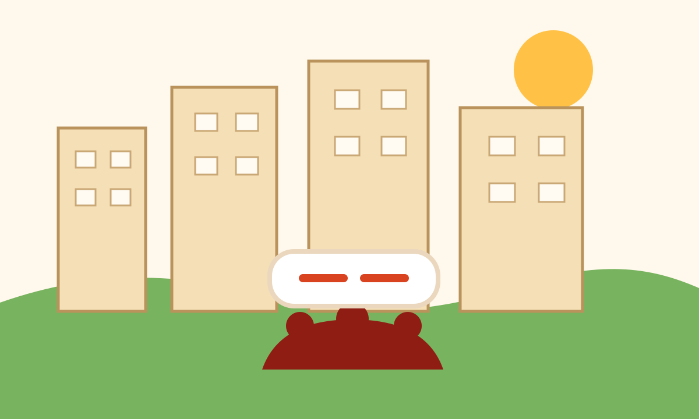

Data-driven governance
From WhatsApp Messages to Real Solutions: Why Every Society Needs Data, Not Drama
Most societies work on opinions, not data. That gap makes problems repeat.

Every Society Has Problems. Few Have Data.
Ask any resident about the problems in their society, and the answers come instantly.
- Water issues.
- Lift breakdowns.
- Parking disputes.
- Security concerns.
- Power outages.
- Housekeeping complaints.
Everyone knows the problems.
But ask a different question:
"How many times did this issue occur in the last six months?"
Suddenly, the room becomes silent.
Because most societies operate on opinions.
Very few operate on data.
The Problem With Memory-Based Management
In many residential societies, decisions are often based on:
- Recent complaints
- Loud voices
- WhatsApp discussions
- Personal perceptions
This creates a dangerous situation.
The issue that gets the most attention is not always the most important issue.
Sometimes a small problem receives huge attention.
Meanwhile, a recurring infrastructure issue quietly grows into a major risk.
Without data, management is reacting.
Not managing.
Imagine Managing a City Without Data
No city would operate without knowing:
- Traffic volumes
- Water consumption
- Crime statistics
- Infrastructure failures
Yet many housing societies manage thousands of residents without maintaining basic operational data.
How many lift failures occurred this year?
Which tower reports the highest number of complaints?
Which vendor generates the most service issues?
Which maintenance problems repeat every month?
Without answers, improvement becomes difficult.
Why Residents Should Care
Residents often think data is only useful for management.
The reality is the opposite.
Data benefits residents because it:
- Improves transparency.
- Creates accountability.
- Supports faster decisions.
- Reduces favoritism.
- Helps prioritize spending.
Instead of asking:
"Why are they spending money on this?"
Residents can see:
"This issue affected 400 families and occurred 27 times last year."
Data changes conversations from emotions to evidence.
What Does a Data-Driven Society Look Like?
Imagine a society where:
- Every issue is logged.
- Every complaint is categorized.
- Every resolution is tracked.
- Every recurring problem is analyzed.
Suddenly patterns become visible.
Instead of fixing the same issue repeatedly, societies start solving root causes.
That is the difference between activity and progress.
The Most Valuable Data Every Society Should Track
Infrastructure Data
- Lift breakdowns
- Water supply interruptions
- Electrical faults
- Equipment failures
Safety Data
- Fire incidents
- Near misses
- Security breaches
- Accident reports
Community Data
- Resident feedback
- Service satisfaction
- Participation levels
Financial Data
- Maintenance costs
- Vendor performance
- Preventive maintenance expenses
Responsibility Matrix
RWA Responsibilities
- Establish data collection systems.
- Review reports regularly.
- Use evidence-based decision making.
- Share insights with residents.
Facility Team Responsibilities
- Maintain accurate records.
- Document incidents.
- Track recurring issues.
- Generate monthly reports.
Residents Responsibilities
- Report issues accurately.
- Provide evidence where possible.
- Support transparency initiatives.
Precautionary Measures
Immediate Actions
- Start an issue register.
- Categorize complaints.
- Record resolution timelines.
Medium-Term Actions
- Create dashboards.
- Publish monthly reports.
- Analyze recurring trends.
Long-Term Actions
- Implement digital society management systems.
- Use predictive maintenance.
- Build a community knowledge repository.
The Society2Be Perspective
Many societies collect complaints.
Very few collect knowledge.
Every complaint contains information.
Every issue contains a lesson.
Every recurring problem contains a pattern.
The question is whether the society captures that information before it is forgotten.
A WhatsApp message disappears in a few days.
Data creates institutional memory.
And communities that remember improve faster than communities that forget.
Final Thought
A society cannot improve what it does not measure.
When decisions are based on assumptions, mistakes multiply.
When decisions are based on data, improvements compound.
The future of community living does not belong to the societies with the biggest clubhouses.
It belongs to the societies that learn from their own experiences and use data to become better every year.
Because data is not about numbers.
It is about making better decisions for people.